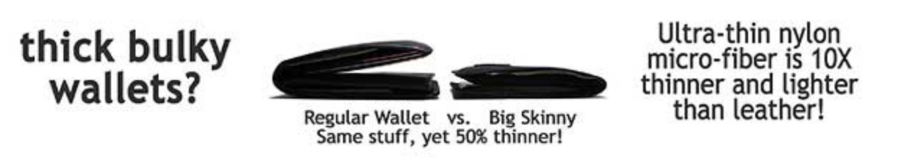
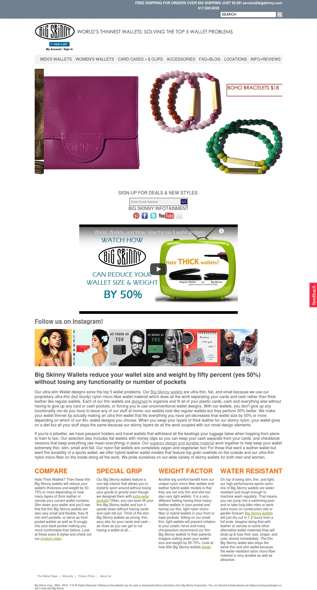
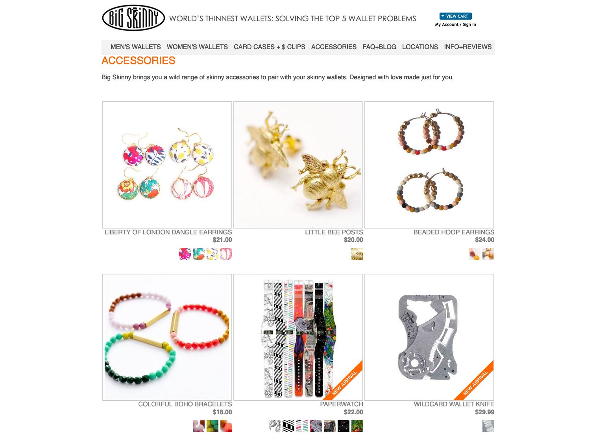
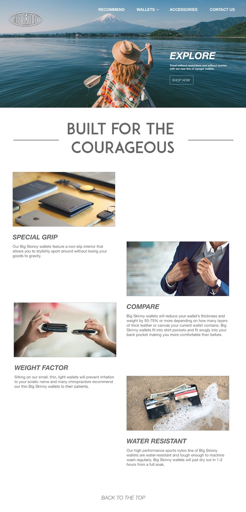
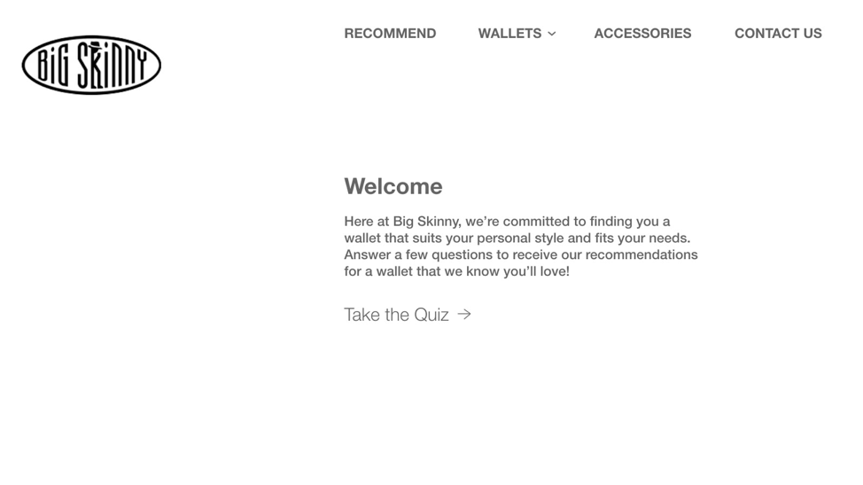
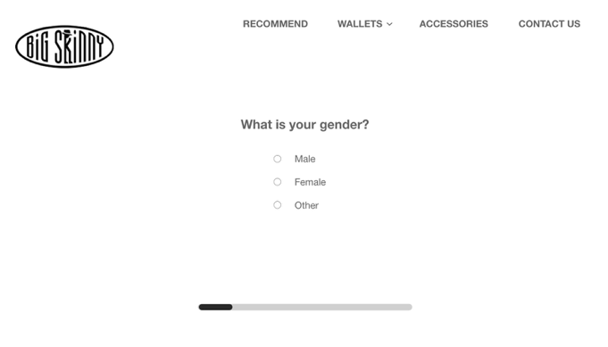
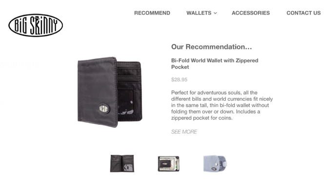

顾问Big Skinny
Overview
Spring 2019
这是 CMU 67-250:信息系统环境 的学期项目。在这个学期项目中，我们是SQL Injection咨询团队，我们的任务是通过分析一个Big Skinny公司目前的UX和营销策略，重塑其品牌。在整个过程中，我们重新设计了Big Skinny的网站，概述了新的数据库结构，并编写了详细的案例分析。
经过两周的工作，我的团队不仅在成果上获得了A，还获得了2019年ISM最佳案例分析奖。
|  |
| Big Skinny的广告 |
{kind=link}
Background
Big Skinny是一家销售瘦钱包的电商公司。由于其独特的材料，该公司可以生产出令人惊讶的薄和轻钱包，也防水，可以机洗。
这似乎是一个伟大的产品，但实际上，这家公司的销售额直线下降，其yelp页面充满了负面的一星评论。
那么，到底出了什么问题呢?
Problems
通过对公司的研究，我和我的团队总结出了三个主要问题。第一个问题: 第一个是糟糕的网站设计。网页设计的不是很人性化，用户很难在网页里导航，同时网页包含了太多的文本和选项。下面是网页的主页截图
这是当我们接手时候他们网页的样子，不同的组件没有对齐，标签和按钮令人困惑(“卡盒+ $ CLIPS”是什么意思??)。整个网站给我的印象像是一个在最后一刻完成的高中项目。由于糟糕的用户界面设计，通过在线广告重定向到这个网站流量，真正成为客户的转化率必然很低。
第二个问题是缺少目标客户群。在它的网站上，它试图瞄准男性、女性、旅行者、警察、青少年、商人，以及一些奇奇怪怪的客户群。比如说“纸表”、“不锈钢网钱包梳子”这些对钱包公司来说毫无关系的产品。
我觉得Big Skinny是教科书中经典的负面教材，它试图适应所有市场。通过提供40多个钱包供人们选择，以及大量不必要的产品。该公司试图取悦所有人，但最终没有赢得任何人的欢心。
三是数据库管理不善。在yelp的页面上，很多人因为2010年的一件事留下了负面评论。在这起事件中，超过4000人通过Big Skinny的网站订购了钱包。但由于如Big Skinny首席执行官基里尔·亚历山德罗夫所说 “在线促销的一个小故障”，大部分钱包都是免费赠送的。自那以后，促销优惠券的技术问题出现了多次，从2013年到2017年都有发生。这可以归因于不理想的数据库结构和管理。
Our Proposal
为了提高Big Skinny的销售额，我们首先需要重塑公司的品牌。因此，我们确定了一个目标客户群体:年轻旅行者。这是因为Big Skinny的防水薄钱包适合旅行者和徒步旅行者的需要。然后，我们发现了它目前网站存在的三个主要问题:冗长的文字、杂乱无章的布局、以及太多的产品选择，使客户无法将范围缩小到一个产品。 为了吸引和帮助更多年轻旅行者购买钱包，我们通过直接针对年轻旅行者开展在线营销活动、重新设计我们的网站、来提供以年轻人为中心的用户体验。最后，我们提出了一个新的数据库关系系统，希望可以避免进一步的优惠券问题
为了吸引年轻的Z一代旅行者，我们发起了“为勇敢无畏的人而建”的在线营销活动。作为该活动的一部分，Big Skinny将需要至少一个人专门为未来的广告持续不断地创建新内容和综合客户评价。该活动的一部分将包括面向所有平台的新媒体，比如针对年轻旅行者群体的Facebook视频广告。
在我们用广告吸引客户到我们的网站后，我们需要提供一个易于使用的用户体验。因此，我们首先重新设计了网站，以一种干净和易于遵循的方式组织其信息架构。我们设计了一个清晰的导航条，在保留基本信息的同时，将索引页中的单词从200个减少到50个左右。通过配以图片，我们可以让客户更容易读懂。
我们设计的新网站
此外，为了帮助客户将他们的选择范围从40多个钱包设计缩小到一个钱包，我们设计了一个交互式钱包选择指南。
最后，我们提出了一个新的数据库关系系统，可以跟踪优惠券记录，客户购买历史，以及库存。
一个用户故事
假设Jack是一个20岁的大学学生， 有一天，他在浏览Facebook时，看到了一个关于这个Big Skinny的短片。这个视频实际上是我们在Facebook上购买的在线营销活动的广告。 在视频的最后，他看到一行写着“为勇敢的人而建”。作为一名旅行者，他受到启发，点击了我们网站的链接。
当他浏览我们的网站时，他看到的第一件事就是这张鼓舞人心的图片。 就在他要去买一个的时候，他看到了钱包选择指南并点击了它。 在那里，他可以选择自己的偏好，网站会提供推荐。
“哇，这些建议看起来很棒。让我看看这个钱包。”
在产品信息页面，我们简化了所有的产品信息。因此，顾客可以快速了解更多关于钱包和下订单。
“这看起来不错。我要了!”
这是一笔交易的结束，但不是我们与该客户关系的结束。 使用我们的数据库系统，在Jack购买第一个钱包一周后，我们将推荐第二个钱包类别，比如一个不同于最初购买的皮钱包，并在一封电子邮件中宣传，“一个在户外，一个在室内。” 来鼓励用户二次购买
综上所述，通过整合市场调研、数据库设计和网站设计，该解决方案将突出Big Skinny的优势，提升客户体验。
Credits
在我们为期两周的学期项目中，我的角色有点像团队中的“scrum master”。我制定了总体目标，和每个人沟通他们的设计，给他们提供反馈，确保生产时间表是有效的，并跟踪我们的学期项目的范围。
由于我们四个人不能经常见面，所以我协调了团队，确保我们都在同一个页面上，并且执行概要、网页样板和ERD紧密集成。另一方面，我的朋友Christine, Megan和Jonathan负责实际工作。谢谢你所做的一切努力!